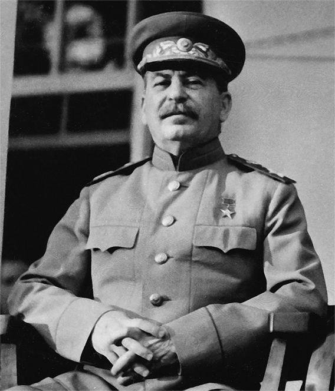

O que é o totalitarismo?
O totalitarismo é um sistema político que proíbe partidos de oposição, restringindo a oposição individual ao Estado e às suas alegações, além de exercer elevado grau de controle na vida pública e privada dos cidadãos. O poder político no totalitarismo pode ser detido por um líder ou partido, que por meio de uma extensa campanha de propaganda, com o objetivo de promover uma faixada que agrade a população, possam aplicar, através de ideologias, seus conceitos e um sistema político o qual será fundamentado pelo controle absoluto sobre toda a nação. O Estado totalitário é basicamente um Estado policial, governado através da violência física e psicológica baseando-se principalmente em um elevado nível militar, a fim de intimidar a população e oprimir pessoas as quais opunham-se as ideias impostas por essa política antidemocrática.• Principais características de regimes totalitaristas Para que o governo de uma nação seja considerado totalitário, deve-se observar algumas características:
- Todo o poder estará concentrado somente em um grupo de pessoas ou somente em um líder;
- Em regimes totalitários, não há democracia, sendo assim, a população não tem direitos coletivos e individuais;
- Forte presença do Militarismo para benefício do governo;
- Mandato por tempo indeterminado;
- Forte visão expansionista (visando a conquista de outros territórios por meio de guerras e conflitos);
- Grande propaganda governamental, com o intuito de conseguir que a população aceite o regime a elas imposto (muitas vezes através de ideias Nacionalistas);
- Controle da população por meio do terror e medo (muitas vezes com a tortura e assassinatos de opositores do regime).
Consequências
Existe uma grande variedade quando se analisa as consequências dos regimes totalitários quando estão estabelecidos como o órgão regente de um país ou território, variando de aspectos individuais a coletivos, em todos os casos, de grande importância. Sendo as mais relevantes para citação as seguintes:• Nos países onde há um governo totalitarista no poder, os direitos individuais são totalmente ignorados, juntamente com as liberdades e garantias humanas. O que resultou na grande quantidade de vidas perdidas durante as ditaduras de Stalin e Hitler, por exemplo.
• Censura da mídia e de outras fontes de informação, com o uso da força, torturas, prisões e expulsões do país, aumentando a desinformação, ignorância e intolerância. Esse controle, mesmo após o fim do regime totalitário, deixa uma grande marca na estrutura social do país.
• Governos totalitários restrigem fortemente suas relações comercias e diplomáticas com outros países. Um exemplo atual é a Coréia do Norte, que é considerada o país mais fechado do mundo.
• Guerras e conflitos civis se tornam frequentes quando um país está em um regime totalitário. Resultando em um número expressivo de mortes.
Nazismo e Fascismo
O período entreguerras, caracterizado pela crise do modelo liberal na política e na economia, influenciou a ascensão de regimes antidemocráticos de extrema direita na Europa, como o nazismo e o fascismo.O fascismo surgiu na Itália em 1919, quando Benito Mussolini criou a Fasci Italiani di Combattimento, grupo que, posteriormente, passou a chamar-se Partido Nacional Fascista. A ascensão do fascismo ao poder na Itália aconteceu em 1922, quando foi organizada a Marcha sobre Roma. O fascismo italiano é considerado o precursor do nazismo na Alemanha e, por conta disso, existem inúmeras semelhanças entre essas duas vertentes totalitárias. Entre as características do fascismo italiano estão: Antiliberalismo; Imposição de um sistema unipartidário no país; Desprezo pelo marxismo; Exaltação de valores tradicionais; Negação de valores modernos; Controle total do Estado sobre a economia, política e cultura. O fascismo governou a Itália de 1922 e 1945, final da segunda guerra.
O crescimento do Partido Nazista explorou consideravelmente o desespero de grande parte da sociedade alemã com a crise econômica e política. Apesar de se autonomear como um partido que representava os trabalhadores (nesse sentido estamos nos referindo às classes operárias), o nazismo contou com grande apoio das classes médias da Alemanha. A partir de 1930, as classes altas do país aderiram ao partido em larga escala O nazismo tinha como grande líder Adolf Hitler e como ideologia elementos como o antissemitismo, isto é, o ódio aos judeus que foi manifestado durante o holocausto, genocídio responsável pela morte de, aproximadamente, seis milhões de judeus. Além do antissemitismo, outras características do nazismo eram o nacionalismo extremado e o racismo que deram origem à ideia dos germânicos como raça “pura” e “superior” (chamados pelos nazistas de “arianos”). O nazismo também incorporava o antimarxismo, o antiliberalismo, o militarismo, a exaltação da guerra etc.
Stalinismo e Maoismo
Sob o título de totalitarismos, as diferenças ideológicas entre regimes como o nazismo de Adolf Hitler e o fascismo de Benito Mussolini, o comunismo de Josef Stalin e o de Mao Zedong, ficam enevoadas. As diferenças que guardam são muitas e dizem respeito aos seus fins. O totalitarismo de esquerda (stalinismo, maoismo e variações) representa o controle do poder político por um representante imposto dos trabalhadores, mas pressupõe uma revolução de fato no regime de propriedades, coletivizando os bens de produção e as terras, embora o objetivo final da teoria marxista pressuponha a abolição do próprio Estado. As semelhanças entre os regimes de Stalin ou Mao com os de Hitler ou Mussolini limitam-se aos métodos — por isso não se pode de forma alguma confundir os dois modelos: respectivamente, um coletiviza a propriedade, o outro a mantém para a classe burguesa. Por outro lado, as semelhanças que estes extremos reúnem entre si são justamente os aspectos definidores do regime totalitário.Atualmente
Normalmente o totalitarismo é primeiramente associado aos regimes fascista e nazista, e por consequência fomentam a ideia de que os governos totalitários tiveram fim com a queda desses regimes. No entanto, atualmente alguns países como a China, Coréia do Norte, e outras nações da África e do oriente Médio, ainda são regidas por governos totalitários, estes por sua vez detêm toda a informação que circulam dentro e fora do país. Na Coréia do Norte por exemplo o governo está totalmente inserido nas vidas públicas e privadas dos cidadãos. O país possui um sistema de despertador coletivo que soa um alarme às 7 horas da manhã através de uma caixa de som presente em todas as residências e escritórios do país. Também não existe atividade noturna no país, pois às 21 horas todos já estão em casa. O governo utiliza da prática de divulgação e culto aos líderes do regime, um exemplo disso é que a cara do ex-primeiro-ministro da Coreia do Norte Kim Il-sung, está em todas as ruas, casas, escolas, fábricas, repartições. A mídia da Coreia do Norte rigorosamente controladas, divulgando apenas notícias que favoreçam o regime. Como resultado, a informação é estritamente controlada tanto notícias internas, quanto externas. A constituição norte-coreana prevê liberdade de expressão e de imprensa; no entanto, o governo proíbe o exercício desses direitos em prática. Em seu relatório de 2008, a Repórteres sem Fronteiras classificou o ambiente da mídia na Coreia do Norte como 172 de 173, atrás apenas da Eritreia. No caso chinês o governo é rotineiramente acusado de violar os direitos civis, incluindo a utilização sistemática de detenção prolongada sem julgamento de ativistas políticos, confissões forçadas, tortura, maus-tratos de prisioneiros, restrições à liberdade de expressão, de reunião, associação, de religião e aos direitos trabalhistas. A China executa mais pessoas do que qualquer outro país, respondendo por 72% do total mundial de execuções em 2009. A censura do discurso político e da informação, inclusive na internet, é aberta e usada rotineiramente para silenciar as críticas ao governo e ao Partido Comunista Chinês. Em 2010, a organização Repórteres sem Fronteiras classificou a República Popular da China na posição 171º (entre 178 estados) em seu relatório anual "Índice de Liberdade de Imprensa". O governo reprime as manifestações de organizações e crenças que considera uma potencial ameaça para o controle da "estabilidade social".Bibliografia
https://www.historiadomundo.com.br/idade-contemporanea/totalitarismo.htm
https://www.coladaweb.com/historia/nazismo-e-fascismo
https://brasilescola.uol.com.br/historiag/nazismo.htm
https://pt.wikipedia.org/wiki/Totalitarismo
https://dialogoshistoricos.wordpress.com/historia/regimes-totalitarios-da-atualidade/
https://pt.wikipedia.org/wiki/Pol%C3%ADtica_da_China
https://pt.wikipedia.org/wiki/Coreia_do_Norte
https://blog.maxieduca.com.br/totalitarismo-facismo-nazismo
Principais regimes totalitários da história
Fascismo
Stalinismo
Nazismo
Salazarismo
Franquismo
Maoismo